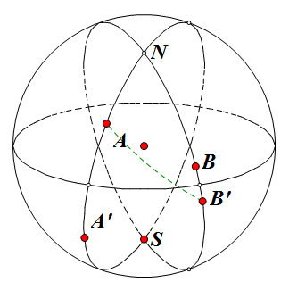

Project Euler 353
Project Euler 353
题目
Risky moon
A moon could be described by the sphere \(C(r)\) with centre \((0,0,0)\) and radius \(r\).
There are stations on the moon at the points on the surface of \(C(r)\) with integer coordinates. The station at \((0,0,r)\) is called North Pole station, the station at \((0,0,-r)\) is called South Pole station.
All stations are connected with each other via the shortest road on the great arc through the stations. A journey between two stations is risky. If \(d\) is the length of the road between two stations, \(\left(\dfrac{d}{\pi r}\right)^2\) is a measure for the risk of the journey (let us call it the risk of the road). If the journey includes more than two stations, the risk of the journey is the sum of risks of the used roads.
A direct journey from the North Pole station to the South Pole station has the length \(\pi r\) and risk 1. The journey from the North Pole station to the South Pole station via \((0,r,0)\) has the same length, but a smaller risk:
\[ \left(\frac{\frac{1}{2}\pi r}{\pi r}\right)^2+\left(\frac{\frac{1}{2}\pi r}{\pi r}\right)^2=0.5 \]
The minimal risk of a journey from the North Pole station to the South Pole station on \(C(r)\) is \(M(r)\).
You are given that \(M(7)=0.1784943998\) rounded to 10 digits behind the decimal point.
Find \(\displaystyle{\sum_{n=1}^{15}M(2^n-1)}\).
Give your answer rounded to \(10\) digits behind the decimal point in the form \(a.bcdefghijk\).
解决方案
本解决方案参考了Thread的一些内容。
基本思想是先枚举出球面上的点，然后将任意两点间的距离求出，把所有的点和边看成是一个无向图，然后使用单源最短路径算法Dijkstra算法求两个极点的最小风险距离。
假设现在需要求\(M(r)\)的值，那么不失一般性，只考虑这些范围内的点\((x,y,z)\)的坐标：\(0\le x\le y\le r,0\le z\le R\)。可以发现枚举量不大，直接枚举即可。
为了方便两点距离的计算，考虑将整个球体向中间缩小到原来的\(\dfrac{1}{r}\)，原来在\((x,y,z)\)上的点，缩放后位于\(\left(\dfrac{x}{r},\dfrac{y}{r},\dfrac{z}{r}\right)\)。方便之处在于不再需要考虑球体本身的半径，例如：
计算两点之间\(A,B\)的圆心角的距离时，如果把它们都看作是从原点射出的向量，那么此举就简化了向量夹角公式。它们的夹角就是\(\theta=\cos^{-1}\vec{a}\cdot\vec{b}\).因为\(|\vec{a}|=|\vec{b}|=1\).那么，两个考察站之间的风险值就是\(\left(\dfrac{\theta}{\pi}\right)^2\).
注意本题采用的Dijkstra算法不使用堆优化，因为这个图是稠密图（甚至是完全图）。如果使用了堆优化那么时间复杂度反而会更差。
接下来通过下图说明：一条最优的路径是和赤道对称的。

假设\(d(A,B)\)表示两个考察站的点之间的最小风险距离，并假设\(N\)是北极点，\(S\)是南极点，\(A,B\)是北半球的任意两个点，\(A',B'\)则是它们对应在南半球的对称点，并且，\(AA'\)和\(BB'\)中间不存在其它点。
假设\(N\rightarrow A\rightarrow B'\rightarrow S\)是一条的非对称的最优路径，那么由对称性可以知道，\(N\rightarrow B\rightarrow A'\rightarrow S\)也是一条最优路径。那么这两条最优路径在赤道上必定相交于一点，设为\(C\).
那么第一条最优路径可以看成是\(N\rightarrow A\rightarrow (C\rightarrow) B \rightarrow N\)。注意\(C\)不一定是一个存在的点，故有这种表示方法。此时这种走法的距离将会远于\(N\rightarrow A\rightarrow (O_A\rightarrow ) A\rightarrow N\).
因此，如果当前走到\(A\)点时，跨过赤道到达\(A'\)后，整条路径的长度就是\(2\cdot d(N,A)+\left(\dfrac{\cos \vec{a}\cdot\vec{a'}}{\pi}\right)^2\).最终结果取这些路径的最小值即可。
代码
1 |
|